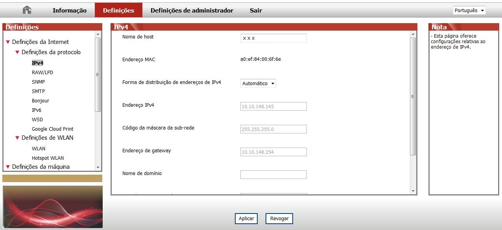

6.Servidor da Web
Você pode através do servidor da Web incorporado, administrar as configurações da impressora.
6.1.Acesso ao Servidor da Web incorporado
1. Ligue as fontes de alimentação da impressora e do computador.
2. Ligue a impressora à rede, verifique que a impressora está conectada à rede do seu computador (para as informações sobre como configurar a rede, por favor consulte o Capítulo 4 ou o Capítulo 5).
3. Digite o endereço IP da impressora na barra de endereço do navegador da Web, para acessar ao servidor da Web incorporado da impressora.
Você pode pressionar por longo tempo o botão de "Cancelar/continuar" no painel de controle para imprimir a página de informações DEMO, vendo as informações de endereço IP da impressora.
 |
Nota: |
• É recomendado que o usuário utilize Microsoft Internet Explorer 8.0 (ou versão superior) ou Firefox 1.0 (ou versão superior), os usuários de Mac usam o Safari 4.0 (ou versão superior). Não importa que tipo de navegador que você use, certifique-se sempre de ativação de JavaScript e cookies. Se usar outro navegador de rede, por favor certifique-se de que é compatível com HTTP 1.0 e HTTP 1.1. • Se o computador não puder acessar ao servidor Web incorporado da impressora, é possível que o computador e a impressora não fiquem na mesma rede, por favor verifique o seu ambiente de rede ou consulte ao seu administrador de rede. |
4. Clique na opção "Login", digite o nome de usuário e a senha (o nome de usuário pré-definido é admin, a senha inicial é 000000), clique em "Login".
|
Nota: |
• Por razões de segurança, recomendamos que você altere a senha pré-definida, você pode entrar na tela de "Administração do usuário" para as mudanças. |
6.2.Utilizar o Servidor da Web para administrar a impressora
Você pode usar o Servidor da Web incorporado, para administrar a impressora.
1. Pode ver as informações básicas sobre a impressora, incluindo o nome do produto, o estado da impressora e o estado do cartucho de toner para laser.
2. Pode configurar os parâmetros de protocolo de rede suportados pela impressora.
3. Pode configurar a conexão de rede sem fio da impressora, para ligar/desligar a rede sem fio.

6.2.1.Configurações do endereço IP
Antes das configurações do endereço IP, você precisa de conectar a impressora à rede.
1. Se for modelo de rede com fio, usa-se um cabo de rede para conectar à interface de rede da impressora, a impressora está conectada à rede com fio.
2. Se for o modelo de rede sem fio, pode através da ferramenta de rede sem fio ou do modo de configuração de Wi-Fi Protected Setup (WPS), irá ligar a impressora à rede sem fio (consulte o Capítulo 5.1).
6.2.1.1.Configurações de IPv4
As configurações do endereço IPv4 da impressora dividem-se em atribuição automática de DHCP e configuração manual, a impressora pré-define a ativação da função de distribuição automática de DHCP. Se for preciso configurar o endereço IPv4 fixo para a impressora, você pode configurar manualmente o endereço IPv4 da impressora.
1. Ligue a energia da impressora, conectando a impressora à rede.
2. Faça login ao servidor da Web incorporado (para as informações sobre como fazer login, por favor consulte o Capítulo 6.1).
3. Clique em "Definições" - "Definições da Internet" - "Definições da protocolo" - "IPv4".
4. O modo de atribuição do endereço IPv4 está definido em "Manual".
5. Digite o "endereço IPv4", a "máscara de sub-rede" e o "endereço da porta de entrada", clique em "Aplicar".
6.2.1.2. Configurações de IPv6
1. Ligue a energia da impressora, conectando a impressora à rede.
2. Faça login ao servidor da Web incorporado (para as informações sobre como fazer login, por favor consulte o Capítulo 6.1).
3. Clique em "Definições" - "Definições da Internet" - "Definições da protocolo" - "IPv6".
4. Selecione a "Ativar o protocolo IPv6" e "Ativar DHCPv6" (selecionado pela pré-definição), clique em "Aplicar".
Você pode atualizar o navegador, na tela "IPv6", veja o "endereço da ligação local de IPv6" e o "endereço com estado."
|
Nota: |
A impressora suporta os seguintes endereços de IPv6 para executar a impressão e a administração de rede. • Endereço da ligação local de IPv6: endereço IPv6 local propriamente configurado (endereço começado por FE80). • Endereço com estado: endereço de IPv6 configurado pelo servidor DHCPv6 (se não houver o servidor DHCPv6 na rede", o "endereço com estado" não pode ser atribuído). |
6.2.2.Configurações sem fio
Você pode através da página de configurações sem fio, configurar a rede sem fio e o hot spot sem fio da impressora. Antes da configuração, por favor primeiro faça login ao servidor da Web incorporado (para as informações sobre como fazer login, consulte o Capítulo 6.1).
6.2.2.1.Rede sem fio
1. Clique em "Definições" - "Definições da Internet" - "Definições de WLAN" - "WLAN".
1) A rede sem fio é pré-definida em ativada, se quiser desativar, selecione a caixa de opção "Fechar", a seguir clique em "Aplicar".
2) Se você quiser configurar a rede sem fio, clique no nome de rede (SSID) do ponto de acesso (roteador sem fio) que precisa de ser conectado na lista de pesquisa, digite a senha, clique em "Aplicar".
6.2.2.2.Hot spot sem fio
1. Clique em "Definições" - "Definições da Internet" - "Definições de WLAN" - "Hotspot WLAN".
1) O hot spot sem fio é pré-definido em ativado, se quiser desativar, selecione a caixa de opção "Fechar", em seguida, clique em "Aplicar".
6.2.3.Configurações da máquina
Você pode através da página de configurações da máquina, adicionar o livro de contatos dos endereços de E-mail, configurar a notificação por E-mail, configurar o tempo de dormir, recuperar as configurações de fábrica.
6.2.3.1.Configuração do tempo de suspender
O tempo de suspender da impressora pré-definido é 1 minuto, se você quiser alterar o tempo de suspender da impressora, pode através do servidor da Web incorporado (impressora instalada através do modo de conexão de rede) para fazer a configuração.
1. Faça login ao servidor da Web incorporado (para as informações sobre como fazer login, por favor consulte o Capítulo 6.1).
2. Clique em "Definições" - "Definições de máquina" - "Sistema".
3. De acordo com suas necessidades selecione o tempo de suspender, clique em "Aplicar".
6.2.4.Restaurar configurações de fábrica através do servidor da Web
1. Faça login ao servidor da Web incorporado (para as informações sobre como fazer login, por favor consulte o Capítulo 6.1).
2. Clique na opção "Definições de administrador", digite os corretos "Nome de conta" e "Palavra-passe", em seguida clique em "Restaurar definições de fábrica", depois de ser concluída a restauração de fábrica, a impressora irá-se reiniciar automaticamente.
|
Nota: |
• Após a restauração das configurações de fábrica da impressora, o nome de usuário do administrador é recuperado para admin, a senha de login é restaurado para 000000. • Se a sua impressora restaurar as configurações de fábrica, o tempo de suspender irá-se restaurar automaticamente para 1 minuto. |